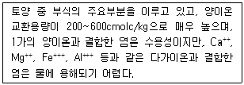
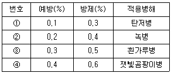
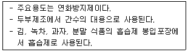
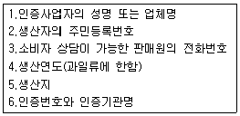

유기농업기사 (2014-08-17 기출문제)
1과목: 재배원론
1. 습해의 대책으로 적합하지 않은 것은?
- 배수시설을 설치한다.
- 밭에서는 휴립휴파 재배를 한다.
- 과산화석회(CaO2)를 종자에 분의하여 파종한다.
- 미숙유기물과 황산근 비료를 시용하여 입단형성을 촉진시킨다.
(정답률: 78%)

2. 토양수분과 작물 생육과의 관계를 옳게 설명한 것은?
- 포장용수량의 pF는 2.5~2.7 정도이다.
- 작물생육에 적합한 수분함량은 pF 3.0~4.7 정도이다.
- 작물이 주로 이용하는 수분은 중력수와 토양입자 흡습수이다.
- 초기위조점에 달한 식물은 수분을 공급해도 살아남기 어렵다.
(정답률: 74%)
3. 목초의 하고현상에 대한 설명으로 옳은 것은?
- 일년생 남방형 목초가 여름철에 많이 발생한다.
- 다년생 북방형 목초가 여름철에 많이 발생한다.
- 여름천의 고온, 다습한 조건에서 많이 발생한다.
- 월동목초가 단일조건에서 많이 발생한다.
(정답률: 80%)
4. 요수량에 대한 설명으로 틀린 것은?
- 건물생산의 속도가 낮은 생육초기의 요수량이 크다.
- 토양수분의 과다 및 과소, 척박한 토양 등의 환경조건은 요수량을 크게 한다.
- 수수, 기장, 옥수수 등이 크고, 알팔파, 클로버 등이 적다.
- 광 부족, 많은 바람, 공기습도의 저하, 저온과 고온은 요수량을 크게 한다.
(정답률: 65%)
5. 우량종자가 갖추어야 할 조건으로 틀린 것은?
- 발아력이 좋아야 한다.
- 초기신장성이 좋아야 한다.
- 유전적으로 다양해야 한다.
- 병, 해충에 감염되지 않아야 한다.
(정답률: 91%)
6. 미숙한 상태의 종자에 이 처리를 하게 되면 배가 더 성숙하여 실제 파종시 발아율이 향상된다. 즉, 저장중의 종자를 일시적으로 약간의 수분을 흡수하게 했다가 다시 건조하여 종자를 보관하는 종자처리 방법은?
- 침종 seed soaking
- 펠렛팅 pelleting
- 프라이밍 priming
- 지베렐린 gibberelling 처리
(정답률: 59%)
7. 기지의 원인이 되는 토양전염병이 아닌 것은?
- 완두 모잘록병
- 인삼 뿌리썩음병
- 사과 적진병
- 토마토 풋마름병
(정답률: 75%)
8. 바람이 작물에 미치는 영향을 설명한 것으로 옳은 것은?
- 냉풍은 작물체온을 저하시키거나 냉해를 유발시키지 않는다.
- 강한 바람으로 기공이 열려 이산화탄소 흡수가 증가되므로 광합성을 조장한다.
- 강한 바람에 의해서 상처가 나면 호흡이 증대하여 채내양분의 소모가 증대한다.
- 일반적으로 벼의 백수한상은 습도 60%에서는 풍속 10m/s 에서도 발생하지 않는다.
(정답률: 79%)
9. Oryza sativa L. 은 어떤 작물의 학명인가?
- 밀
- 토마토
- 벼
- 담배
(정답률: 79%)
10. 작물과 온도와의 관계를 바르게 설명한 것은?
- 고등식물의 열사온도는 대력 80~90℃ 이다.
- 밤이나 그늘의 작물체온은 기온보다 높아지기 쉽다.
- 고구마는 변온보다 항온조건에서 덩이뿌리의 발달이 촉진된다.
- 혹서기에 토양온도는 기온보다 10℃ 이상 높아질 수 있다.
(정답률: 49%)
11. 작물의 내열성에 대한 설명으로 옳은 것은?
- 어린 잎이 늙은 잎보다 내열성이 크다.
- 세포내의 점성이 높으면 내열성이 증대한다.
- 세포내의 유리수가 많으면 내열성이 증대한다.
- 세포내의 단백질 함량이 많으면 내열성이 감소한다.
(정답률: 55%)
12. 감자나 고구마의 파종기나 이식기가 늦어졌을 때 T/R율이 커지는 이유로 옳은 것은?
- 탄수화물의 축적이 지하부에서 더 빨리 진행되기 때문이다.
- 지하부의 중량감소가 지상부의 중량감소보다 커지기 때문이다.
- 지하부의 생장보다 지상부의 생장이 더 크게 저해되기 때문이다.
- 지하부에 질소집적이 많아지고 단백질 합성이 왕성해지기 때문이다.
(정답률: 52%)
13. 엽록소 형성에 가장 효과적인 광파장은?
- 황색광 영역
- 자외선과 자색광 영역
- 녹색광 영역
- 청색광과 적색광 영역
(정답률: 77%)
14. 스위스의 식물학자로 산야에서 채취한 과실을 먹고 던져둔 종자에서 똑같은 식물이 자라는 것을 보고 파종이라는 관념을 배웠을 것으로 추정한 사람은?
- A. P. De Candolle
- G. Allen
- H. J. E. Peake
- P. Dettweiler
(정답률: 52%)
15. 1년생 가지에서 결실하는 과수로만 나열된 것은?
- 복숭아, 감
- 사과, 밤
- 감, 밤
- 복숭아, 사과
(정답률: 71%)
16. 접목 육묘 시 활착률을 높이기 위해 필요한 검토사항으로 적절하지 않은 것은?
- 접목 시 가능한 상처 면적을 줄이기 위해 절단면을 작게 한다.
- 대목과 접수의 접목 친화성이 낮으면 대승현상이나 대부현상 등이 발생하여 생육이 왕성한 시기에 접목부위를 통한 양수분의 이동이 적어져 말라 죽는다.
- 접목 시기는 대부분 겨울철로 저온과 낮은 상대습도로 인해 활착이 늦어지고 활착률이 떨어지므로 접목상 내는 저온이 되지 않도록 하고, 가습장치를 이용하여 상대습도가 지나치게 낮지 않도록 해야 한다.
- 이병주 접목에 따른 연쇄적인 병 발생 방지를 위해 접목도구의 소독문제를 고려해야 한다.
(정답률: 55%)
17. 작물의 냉해에 대한 설명으로 틀린 것은?
- 병해형 냉해는 단백질의 합성이 증가되어 체내에 암모니아의 축적이 적어지는 형의 냉해이다.
- 혼합형 냉해는 지연형 냉해, 장해형 냉해, 병해형 냉해가 복합적으로 발생하여 수량이 급감하는 형의 냉해이다.
- 장해형 냉해는 유수형성기부터 개화기까지, 특히 생식세포의 감수분열기에 냉온으로 불임현상이 나타나는 형의 냉해이다.
- 지연형 냉해는 생육 초기부터 출수기에 걸쳐서 여러 시기에 냉온을 만나서 출수가 지연되고, 이에따라 등숙이 지연되어 후기의 저온으로 인하여 등숙 불량을 초래하는 형의 냉해이다.
(정답률: 79%)
18. 식물의 생장을 억제하는 물질이 아닌 것은?
- B-nine(B-9)
- CCC(Cycocel)
- MH(maleic hydrazide)
- NAA(1-naphthaleneacetic acid)
(정답률: 68%)
19. 나팔꽃 대목에 고구마 순을 접목하여 개화를 유도하는 이론적 근거로 가장 적합한 것은?
- C/N율
- G-D균형
- L/W율
- T/R율
(정답률: 65%)
20. 비선택성의 파종 전 처리 제초재로서 제초효과가 높고 값이 싸 널리 이용되었으나, 음독 농약으로 사회적 물의를 일으키는 등 문제됨에 따라 최근 사용금지된 것은?
- simazine
- paraquat
- alachlor
- bentazon
(정답률: 78%)
2과목: 토양비옥도 및 관리
21. 화학적 반응에 따라 같은 분류의 구분으로 틀린 것은?
- 요소, 황산칼륨, 염화칼륨
- 황산암모늄, 황산칼륨, 요소
- 질산암모늄, 황산칼륨, 염화칼륨
- 질산암모늄, 염화암모늄, 염화칼륨
(정답률: 57%)
22. 습답의 특징으로 보기 어려운 것은?
- 환원상태이다.
- 식물양분 성분의 함량이 풍부하다.
- 탈질현상이 있을 수 있다.
- 토양산도가 강산성을 나타낸다.
(정답률: 65%)
23. 탄질비(C/N율)와 가장 밀접한 관계에 있는 사항은?
- 지상부와 지하부의 생육비율
- 염기포화도
- 유기물의 분해속도
- 식물양분의 균형비율
(정답률: 52%)
24. 점토광물의 음전하 생성 원인이 아닌 것은?
- 동형치환
- 변두리 전하
- 잠시적 전하
- 음이온의 흡착
(정답률: 45%)
25. 주요 화성암 중 심성암이면서 염기성암인 것은?
- 반려암
- 화강암
- 유문암
- 안산암
(정답률: 44%)
26. 다음 토양의 구조 중에서 공극양이 가장 적은 것은?
- 입단구조 밀상태(사열)
- 입단구조 조상태(정열)
- 단립구조 밀상태(사열)
- 단림구조 조상태(정열)
(정답률: 52%)
27. 농경지 토양유기물 유지를 위한 적절한 농경지 유기물 관리 방안으로 거리가 먼 것은?
- 경운을 최소화
- 농경지 피복
- 비료사용 억제
- 경사지에서의 등고선 재배
(정답률: 49%)
28. 토양물리성에 대한 설명으로 틀린 것은?
- 부식질 토양은 토양입자가 입단화 되어 공극률이 크다.
- 토양광물이 중금속을 많이 함유하면 진비중이 커진다.
- 토양입단을 증진하는 인자는 유기물, 미생물, 식물뿌리, 토양개량제 등이 있다.
- 토양의 경도는 토양에 충격이 가해졌을 때 물리적으로 형태를 변화시키는 데 필요하 힘이다.
(정답률: 49%)
29. 논토양에서 NH4+ 형태의 질소에 비하여 NO3- 형태의 질소의 이용 효율이 낮은 이유로 옳은 것은?
- NO3- 형태의 질소는 토양에 강하게 흡착되어 이용되기 어렵기 때문이다.
- NO3- 형태의 질소는 탈질작용을 통하여 손실되기 때문이다.
- NO3- 형태의 질소는 금속성 음이온과 쉽게 결합하여 침전되기 때문이다.
- 미생물은 NO3- 형태의 질소를 우선적으로 흡수하여 부동화시키기 때문이다.
(정답률: 74%)
30. 토양분류의 총괄적(형태론적)분류체계에서 사용하는 토양목의 이름은?
- Gelisols
- Planosols
- Regosols
- Podozols
(정답률: 46%)
31. 토양의 완충능 buffering capacity 에 대한 설명으로 틀린 것은?
- 치환산도가 큰 토양일수록 완충능이 크다.
- 완충능은 토양의 pH 값이 변화하는 것에 저항하는 힘이다.
- 완충능이 큰 토양일수록 활산성에 비해 잠산성이 적다.
- 완충능이 큰 토양일수록 교질물질의 함량이 많다.
(정답률: 57%)
32. 토양을 형태론적으로 분류할 때 단면의 특성이 같은 페돈(pedon)으로 분류한 단위는?
- 목
- 통
- 군
- 종
(정답률: 83%)
33. 황산칼륨 비료에는 어떤 원소가 들어 있는가?
- K, O, S
- C, O, K, N
- C, N, S, K
- O, H, S, K
(정답률: 60%)
34. 토양침식 방지 방안이 아닌 것은?
- 심토경운
- 등고선 재배
- 등고선 승수로 설치
- 상ㆍ하경
(정답률: 42%)
35. 리그닌이 토양 중에서 잘 분해되지 않도록 하는 리그닌의 주요 구성성분은?
- 아미노산
- 글루코스
- 페놀
- 유기산
(정답률: 59%)
36. 토양 입단구조의 중요성에 대한 설명으로 가장 거리가 먼 것은?
- 토양의 통기성과 통수성에 영향을 미친다.
- 토양 침식을 억제한다.
- 토양 내에 호기성 미생물의 활성을 증대시킨다.
- Na 이온은 토양의 입단화를 촉진시킨다.
(정답률: 82%)
37. 토양구조 중 우리나라 해성토(간척지)의 심토에서 흔히 볼 수 있는 구조는?
- 입상구조
- 괴상구조
- 주상구조
- 판상구조
(정답률: 44%)
38. 다음 설명하는 부식의 성분은?

- 부식탄 humin
- 풀브산 fulvic acid
- 히마토멜란산 hymatomelanic acid
- 부식산 humic acid
(정답률: 72%)
39. 양이온 교환용량에 대한 설명으로 틀린 것은?
- 토양의 pH가 낮아질수록 CEC는 크다.
- 토양의 비옥도가 높으면 CEC는 대체로 크다.
- 토양이 미세할수록 CEC는 크다.
- 유기물이 많은 토양은 대체로 CEC가 크다.
(정답률: 69%)
40. 토양 중에 서식하는 조류(藻類)의 역할로 가장 거리가 먼 것은?
- 규산염을 생물학적으로 풍화
- 유기물의 생성
- 산소의 공급
- 산성토양을 중성으로 개량
(정답률: 54%)
3과목: 유기농업개론
41. 교잡육종법에 있어 계통육종법에 관한 설명으로 틀린 것은?
- 초기세대에서 선발한다.
- 육종효과가 빨리 나타난다.
- 질적 형질의 개량에 효과적이다.
- 육종재료의 관리와 선발에 시간과 노력이 적게 든다.
(정답률: 55%)
42. 친환경적인 병충해 방제를 위해 최근에 개발, 보급된 난황유의 예방 및 방제에 사용되는 농도와 적용병해가 가장 적절하게 짝지어진 것은?

- ①
- ②
- ③
- ④
(정답률: 52%)
43. 윤작의 기능이 아닌 것은?
- 토양 유기물의 공급과 유지
- 토양이용률 향상
- 토양양분의 균형 유지
- 질소 천연공급량의 감소
(정답률: 75%)
44. 토양의 질적 수준 및 토양비옥도 유지, 증진 수단의 실천기술로 거리가 먼 것은?
- 연작
- 간작
- 녹비
- 작물윤작
(정답률: 82%)
45. 종자의 증식 보급체계로 옳은 것은?
- 기본식물 양성-원원종 생산-원종생산-보급종 생산
- 원종 생산-원원종 생산-보급종 생산-기본식물 양성
- 원원종 생산-원종생산-기본식물 양성-보급종 생산
- 보급종 생산-원종 생산-원원종 생산-기본식물 양성
(정답률: 75%)
46. 우리나라에서 친환경농업육성법이 제정된 후 정부가 친환경농업 원년을 선포한 년도는?
- 1997년
- 1998년
- 1999년
- 2000년
(정답률: 41%)
47. 시설재배 작물과 주요 병해의 연결로 틀린 것은?
- 고추 - 녹병
- 딸기 - 잿빛곰팡이병
- 오이 - 덩굴마름병
- 토마토 - 흰가루병
(정답률: 52%)
48. 친환경농업을 위한 작물양분종합관리의 실천 방향으로 틀린 것은?
- 농업부산물 등 화학비료를 대체할 수 있는 유기성 양분물질의 적극 활용
- 토양조건과 작물에 맞는 최적량의 비료를 시용하는 비료사용기술의 체계화
- 충분한 양의 양분자재를 투입하여 환경오염을 방지하고 식품의 안정성을 유지
- 작물이 양분을 최대로 흡수, 이용할 수 있는 토양 비옥도 관리 및 재배기술을 적극 수용
(정답률: 52%)
49. 유기농업 병해충 제어의 기본원칙으로 적합하지 않은 것은?
- 생태계의 섬 활용
- 유기종자의 재배
- 천적의 보호
- 논둑이나 밭둑의 소각
(정답률: 69%)
50. 묘판상토의 적정 산도(pH) 범위가 가장 낮은 작물을?
- 고구마
- 양파
- 멜론
- 아스파라거스
(정답률: 45%)
51. 유기농업의 종자로 사용할 수 없는 육종방법은?
- 분리육종
- 교배육종
- 동질배수체육종
- 잡종강세육종
(정답률: 62%)
52. 대체로 볍씨는 중량의 22.5% 정도의 물을 흡수하면 발아할 수 있는데 종자 소독 후 침종은 적산온도 100℃를 기준으로 수온이 15℃인 물에서는 며칠간 실시하는 것이 가장 적당한가?
- 4.5일
- 7일
- 10일
- 15일
(정답률: 58%)
53. 조사료 종류별로 한우 및 젖소의 1일 조사료의 기본 섭취량으로 가장 적절하지 않은 것은? (단, 체중을 기준으로 한다)
- 한우 300kg의 건초 섭취량 = 6~9kg
- 젖소 400kg의 생초 섭취량 = 2~2.4kg
- 한우 500kg의 볏짚 섭취량 = 5.7.5kg
- 젖소 600kg의 사일리지 섭취량 = 30~36kg
(정답률: 40%)
54. 유기농업자재로서 비료 또는 토양개량에 사용하는 자재와 가장 거리가 먼 것은?
- 탈수된 가금 퇴비
- 식초 등 천연산
- 구아노(guano)
- 부숙된 사람의 배설물
(정답률: 52%)
55. 유기조사료 중에서 유기사일리지 제조에 중요한 역할을 하는 미생물은?
- 낙산균
- 초산균
- 유산균
- 효모균
(정답률: 50%)
56. 천적을 증식하고 유지하는데 이용되는 식물을 무엇이라 하는가?
- sucker plant
- insect plant
- cover plant
- banker plant
(정답률: 79%)
57. 유기농업에서 이용되는 콜레마니진디벌은 주로 어느 작물 재배시 이용되는가?
- 엽채류
- 수도
- 사과
- 포도
(정답률: 47%)
58. 유엔 식량농업기구(FAO)와 세계보건기구(WHO) 합동식품규격 사업단에서 설립하였으며 유기농산물을 비롯한 유기식품의 생산과 가공, 저장, 운송, 판매 등에 관한 국제기준을 정하는 곳은?
- HACCP 기준원
- IFOAM
- IOAS
- CODEX
(정답률: 79%)
59. 시설원예에서 주로 사용하는 천적에 대한 기능적 분류로 틀린 것은?
- 기생성 천적
- 병원성 천적
- 포식성 천적
- 부착성 천적
(정답률: 62%)
60. 가축에 있어 세균성 전염병은?
- 구제역
- 광견병
- 뉴캣슬병
- 브루셀라증
(정답률: 46%)
4과목: 유기식품 가공.유통론
61. 30% 의 가용성 고형분을 가진 과실 200g을 1L의 물로 추출하고자 한다. 평형이 이루어졌을 때 과실과 물 혼합액의 가용성 고형분 함량은?
- 5%
- 10%
- 15%
- 20%
(정답률: 36%)
62. 다음에서 설명하는 식품첨가물은?

- 겔화제 gelling agent
- 과산화수소 hydrogen peroxide
- 염화칼슘 calcium chloride
- 글루콘산 gluconic acid
(정답률: 79%)
63. 마케팅 믹스전략의 4가지 요소가 아닌 것은?
- 제품
- 가격
- 수송
- 판매촉진
(정답률: 68%)
64. 레토르트 포장기법에 대한 설명으로 가장 거리가 먼 것은?
- 고온살균을 하므로 재질의 특성은 높은 살균온도에 견디는 내열성이 중요하다.
- 식품의 유통기한은 산소의 투과에 의한 품질변화에 의하여 결정된다.
- 식품을 포장하고 고온고압에서 살균한 후 밀봉한다.
- 주로 사용되는 재료로는 PET/AL/PP이다.
(정답률: 42%)
65. 식품가열에 사용되는 마이크로 주파수는?
- 715㎒
- 1850㎒
- 2450㎒
- 3615㎒
(정답률: 70%)
66. 농산물의 일반적인 유통경로는?
- 중계-분산-가공
- 중계-가공-분산
- 수집-중계-분산
- 분산-가공-중계
(정답률: 74%)
67. 유기식품 생산 시 사용할 수 없는 보조제는?
- 나무껍질성분 제제
- 달걀 흰자질
- 유전자조작 미생물 제제
- 고령토
(정답률: 85%)
68. 단백질 식품 중 어육과 식육의 부패정도를 나타내는 화학적 지표 검사항목은?
- 휘발성 염기질소(VBN)
- 경도(Hardness)
- 과산화물가(Peroxide value)
- 생균수
(정답률: 57%)
69. 식물성 자연독 성분을 함유한 식품이 잘못 연결된 것은?
- gossypol - 정제가 불충분한 목화씨 기름
- solanin - 감자
- cicutoxin - 독미나리
- lycorin - 미국 자리공
(정답률: 68%)
70. 전분질 식품을 높은 온도로 가열할 때 생성되는 물질로 감자튀김 등에서 발견되어 문제가 된 독성 물질은?
- 니트로사민 N-Nitrosamine
- 아크릴아마이드 Acrylamide
- 아플라톡신 Aflatoxin
- 솔라닌 Solanine
(정답률: 36%)
71. 유기가공식품에 사용하는 원재료에 대한 설명으로 틀린 것은?
- 동일 원재료에 대해서 유기농산물과 비유기농산물을 혼합한 경우에는 함량을 표기해야 한다.
- 유기가공식품의 제조, 가공 및 취급과정에서 전리 방사선을 사용할 수 없다.
- 유전자재조합 식품 또는 식품첨가물을 사용하거나 검출되어서는 아니된다.
- 당해 식품에 사용하는 용기, 포장은 재활용이 가능하거나 생물분해성 재질이어야 한다.
(정답률: 65%)
72. 유기 과실통조림을 제조하기 위하여 사용할 수 있는 박피 방법은?
- 증기 박피법
- 알칼리 박피법
- 산 박피법
- 산, 알칼리 병용 박피법
(정답률: 63%)
73. 다음 중 도매시장의 주된 기능과 거리가 먼 것은?
- 농산물 수급조절 기능
- 농산물 가격형성 기능
- 농산물 판매 기능
- 농산물 집하 기능
(정답률: 44%)
74. 유기합성농약은 일체 사용하지 않고 재배하며 화학비료는 권장시비량의 1/3 이내를 사용하여 재배하는 농산물과 가장 관계 깊은 것은?
- 유기농산물
- 전환기유기농산물
- 무농약농산물
- 저농약농산물
(정답률: 66%)
75. 화농성 질환의 병원균으로 독소형 식중독의 원인균은?
- Leuconostoc mesenterodes
- Streptococcus faecalis
- Staphylococcus aureus
- Bacillus coagluans
(정답률: 42%)
76. 유기적 가공의 원칙이 아닌 것은?
- 합성 식품첨가물의 사용
- 물리적 가공방법
- 생물학적 가공방법(유전자 조작 제외)
- 유기적 순수성 유지
(정답률: 82%)
77. 사람 또는 가축에게 식중독을 일으키는 마이코톡신(mycotoxin)의 연결이 옳은 것은?
- 간장독 - 아플라톡신 aflatoxin - 땅콩 - Fusarium 속
- 신장독 - 시트리닌 citrinin - 쌀 - Penicillium 속
- 신경독 - 슬라프라민 slaframine - 사료 - Aspergillus 속
- 피부염 - 오크라톡신 ochratoxin - 옥수수 - Yersinia 속
(정답률: 47%)
78. 한외여과에 대한 설명으로 틀린 것은?
- 고분자 물질로 만들어진 막의 미세한 공극을 이용한다
- 물과 같이 분자량이 작은 물질은 막을 통과하나 분자량이 큰 고분자 물질의 경우 통과하지 못한다
- 단백질 농축, 전분 및 당류의 분리, 치즈제조에 사용된다
- 삼투압보다 높은 압력을 용액 중에 작용시켜 용매가 반투막을 통과하게 한다
(정답률: 63%)
79. 유기시스템의 이력추적에 관한 기록자료가 아닌 것은?
- 구매대장
- 거래증명
- 교육일지
- 원료의 유기인증서
(정답률: 73%)
80. 농식품의 방사성물질 검출 기준치를 나타내는 단위는?
- 베크렐 Bq
- 시버트 Sv
- 큐리 Ci
- 그레이 Gy
(정답률: 59%)
5과목: 유기농업관련 규정
81. 유기가공식품의 인증기준에 대한 설명으로 틀린 것은?
- 물과 소금을 사용할 수 있으며, 최종 제품의 유기 성분비율 산정 시 제외한다.
- 유전자변형 생물체 및 유전자 변형 생물체 유래의 원료를 사용할 수 없다.
- 유기가공식품에 허용되는 물질을 식품첨가물 및 가공보조제로 사용할 수 있으나, 그 사용이 불가피한 경우에 한하여 최소량을 사용하여야 한다.
- 유기원료를 상업적으로 조달할 수 없는 경우, 물과 소금을 제외한 제품 중량의 10퍼센트 비율 내에서 비유기 원료를 사용할 수 있다.
(정답률: 72%)
82. 『농림축삭신품부 소관 친환경농어업 육성 및 유기식품 등의 관리,지원에 관한 법률 시행규칙』에 의해 인증사업자는 법에 따라 자재, 원료의 사용에 관한 자료 또는 문서, 인증품의 생산, 제조, 가공 또는 취급 실적에 관한 자료 또는 문서를 그 생산년도 다음 해부터 몇 년간 보관하여야 하는가?
- 1년
- 2년
- 3년
- 5년
(정답률: 60%)
83. 『친환경농어업 육성 및 유기식품 등의 관리,지원에 관한 법률』 및 관련 법령에 따른 인증기관의 지정에 관한 설명으로 틀린 것은?
- 지정의 유효기간은 5년이다.
- 인증기관의 지정에 관한 권한은 국립농산물품질관리원장과 국립수산물품질관리원장에게 위임되어 있다.
- 인증기관의 지정기준에는 조직 및 인력, 시설, 인증업무 규정에 관한 기준이 있다.
- 지정의 유효기간이 만료된 후 계속하여 인증업무를 하려면 그 유효기간 만료 후에 재지정을 받아야 한다.
(정답률: 68%)
84. 『Codex 유기식품의 생산, 가공, 표시, 유통에 관한 가이드라인』에 따른 유기생산 체계의 목적과 가장 거리가 먼 것은?
- 농장에서 생물학적 다양성을 증진시키기 위하여
- 동식물 유래 폐기물을 재활용하여 영양분을 토양에 되돌려주는 한편 재생이 불가능한 자원의 사용을 최소화하기 위하여
- 수질 및 토양의 오염을 최소화하고 이들의 건전한 사용을 촉진하기 위하여
- 유기농업은 지역 형편에 따라 현지 적응 체계가 필요하므로 가급적 농장 외부 물자의 투입(off-farm input)을 통한 총체적 생산관리를 위하여
(정답률: 49%)
85. 『Codex 유기식품의 생산, 가공, 표시, 유통에 관한 가이드라인』에 따라 유기상태에 도달한 농지에 비유기 가축이 입식되었을 경우, 그 제품을 유기제품으로 팔 수 있으려면 가축별로 최소한의 준수기간 동안 Codex 가이드라인에 따라 사육되어야 한다. 가축별 최소한의 준수기간으로 틀린 것은?
- 돼지 육제품 :６개월
- 면양과 산양 육제품 : 12개월
- 가금과 산란계 육제품 : 소관당국이 설정한 수명 전체
- 육제품 생산용 송아지 : 6개월령 미만으로 이유 직후 입식하여 6개월
(정답률: 31%)
86. 『농림축삭신품부 소관 친환경농어업 육성 및 유기식품 등의 관리, 지원에 관한 법률 시행규칙』에 따라 유기식품등의 인증을 받은 자가 인증의 유효기간을 연장하고자 할 때 언제까지 신청해야 하는가?
- 유효기간이 끝나는 날의 10일 전까지
- 유효기간이 끝나는 날의 20일 전까지
- 유효기간이 끝나는 날의 2개월 전까지
- 연장신청 없이 판매 가능
(정답률: 54%)
87. 『Codex 유기식품의 생산, 가공, 표시, 유통에 관한 가이드라인』에 따라 유기농법으로 전환하는 과정에 있는 제품에 “유기로 전환중(transition organic)"이라는 표시를 하기 위해 부합되어야 하는 요건으로 틀린 것은?
- 유기방법을 사용하여 6개월이 지나야 한다.
- 가장 최근의 준비작업을 실시한 사업자를 승인한 공인인증기관이나 인증권자의 명칭 또는 코드번호가 표시되어야 한다.
- 변환/전환에 관한 표시는 전환과정을 완전히 거친 제품과의 차이점에 대해 구입자의 혼동을 일으키지 않아야 한다.
- 변환/전환에 대한 표시는 “유기농법으로 전환하는 과정에 있는 제품”과 같은 표현 형태를 취하거나, 그 제품이 유통되는 국가의 소관당국이 허락한 유사한 단어나 문구로 표현되어야 한다.
(정답률: 58%)
88. 『친환경농어업 육성 및 유기식품 등의 관리, 지원에 관한 법률』에서 규정한 인증 등에 대한 부정행위의 금지에 해당하지 않는 것은?
- 거짓이나 그 밖의 부정한 방법으로 유기식품 등의 인증을 받거나 인증기관으로 지정받는 행위
- 인증을 받지 아니한 제품을 유기표시나 이와 유사한 표시를 하는 행위
- 인증품에 인증을 받지 아니한 제품 등을 섞어서 판매하거나 섞어서 판매할 목적으로 보관, 운반 또는 진열하는 행위
- 인증을 받은 유기식품을 다시 포장하지 아니하고 그대로 저장, 운송, 수입 또는 판매하는 자가 취급자 인증을 신청하지 아니한 행위
(정답률: 73%)
89. 『친환경농어업 육성 및 유기식품 등의 관리, 지원에 관한 법률』의 제1조에서 규정하고 있는 목적이 아닌 것은?
- 농어업의 환경보전기능 증대
- 농어업으로 인한 환경오염의 감축
- 친환경농업을 실천하는 농어업인의 육성
- 고품질 농산물의 생산증대
(정답률: 65%)
90. 유기농축산물의 함량에 따른 제한적 유기표시의 기준에 따라 특정 원재료로 유기농축산물을 사용한 제품의 표시기준으로 틀린 것은?
- 관련 규정에 따른 유기식품등의 인증표시와 유기라는 용어를 제품명 또는 제품명의 일부로 표시할 수 있다.
- 표시장소는 원재료명 및 함량 표시란에만 표시할 수 있다.
- 해당 원재료명의 일부로 “유기”라는 용어를 표시할 수 있다.
- 원재료명 및 함량 표시란에 유기농축산물의 함량을 백분율(%)로 표시하여야 한다.
(정답률: 30%)
91. 『Codex 유기식품의 생산, 가공, 표시, 유통에 관한 가이드라인』에서 정한 용어의 정의 중 유전자 공학/변형기술에 포함되지 않는 것은?
- 잡종교배
- 세포융합
- 캡슐화
- DNA 재조합
(정답률: 59%)
92. 『Codex 유기식품의 생산, 가공, 표시, 유통에 관한 가이드라인』에서 벌 군락의 질병 예방을 위한 품종선택과 벌통의 관리 방법으로 적절하지 않은 것은?
- 필요할 경우, 여왕벌의 갱신
- 벌통에 충분한 화분과 꿀이 수집될 수 있는 가용성
- 오염된 벌통이나 재료는 청소하고 소독
- 현지 조건에 잘 적응할 수 있는 강건한 품종의 사용
(정답률: 64%)
93. 『농림축삭신품부 소관 친환경농어업 육성 및 유기식품 등의 관리, 지원에 관한 법률 시행규칙』에 의한 유기식품등의 인증정보 표시방법으로 보기 중 인증품 또는 인증품의 포장, 용기에 표시하는 사항이 아닌 것으로만 나열된 것은?

- 1, 2
- 2, 4
- 2, 3, 5
- 1,4,6
(정답률: 39%)
94. 『농림축삭신품부 소관 친환경농어업 육성 및 유기식품 등의 관리, 지원에 관한 법률 시행규칙』에 따른 유기축산물의 사료 및 영양관리 기준에 대한 설명으로 틀린 것은?
- 유기축산물의 생산을 위한 가축에게는 100% 비식용 유기가공품(유기사료)을 급여하여야 한다.
- 필요에 따라 가축의 대사기능 촉진을 위한 합성 화합물을 첨가할 수 있다.
- 반추가축에게 사일리지만 급여해서는 안 되며, 비반추가축에게도 가능한 조사료 급여를 권장한다.
- 생산과정 중 심각한 천재지변, 극한 기후조건 등으로 인하여 유기사료의 급여가 어려운 경우 인증기관장은 일정기간 동안 유기사료가 아닌 사료를 일정 비율로 급여하는 것을 허용할 수 있다.
(정답률: 72%)
95. 『친환경농어업 육성 및 유기식품 등의 관리,지원에 관한 법률』에 의해 1년 이하의 징역 또는 1천만 이하의 벌금에 처할 수 있는 경우는?
- 인증기관의 지정을 받지 아니하고 인증업무를 하거나 공시등기관의 지정을 받지 아니하고 공시등 업무를 한 자
- 인증을 받지 아니한 제품에 인증표시 또는 이와 유사한 표시나 인증품으로 잘못 인식할 우려가 있는 표시 등을 한 자
- 인증 또는 공시등 업무의 정지기간 중에 인증 또는 공시등 업무를 한 자
- 인증품에 인증을 받지 아니한 제품 등을 섞어서 판매하거나 섞어 판매할 목적으로 보관, 운반 또는 진열한 자
(정답률: 30%)
96. 무농약농산물에서 잔류농약은 검출되지 아니하여야 한다. 다만, 『식품위생법』에 따라 식품의약안전처장이 고시한 농산물의 농약잔류 허용기준의 20분의 1이하로 검출되어 검출원인을 조사한 결과 다음과 같을 때 무농약농산물의 인증에 허용되지 않는 경우는?
- 인근 관행농업 포장으로부터 바람에 의한 비산
- 관개 또는 이웃 포장의 배수 등 농업용수에 의한 오염
- 의도적으로 농약을 사용했으나 농약이 기준치의 1/100이하로 검출
- 불가항력적인 요인에 의한 오염
(정답률: 72%)
97. 『농림축삭신품부 소관 친환경농어업 육성 및 유기식품 등의 관리,지원에 관한 법률 시행규칙』에 따른 유기가공식품의 생산에 사용가능한 가공보조제의 허용범위로 옳은 것은?
- 밀납-이형제
- 규조토-산도조절제
- 과산화수소-응고제
- 수산화칼슘-여과보조제
(정답률: 52%)
98. 유기가공식품의 가공방법에 대한 설명으로 틀린 것은?
- 저장을 위하여 공기, 온도, 습도 등 환경을 조절할 수 있으며, 건조하여 저장할 수도 있다.
- 유기식품의 가공 및 취급과정에 있어 전리 방사선을 사용할 수 있다.
- 추출을 위하여 물, 에탄올, 식물성 및 동물성 유지, 식초, 이산화탄소, 질소를 사용할 수 있다.
- 기계적, 물리적, 생물학적 방법을 이용하되 식품을 화학적으로 변형시키거나 반응시키는 일체의 첨가물, 보조제, 그 밖의 물질은 사용할 수 없다.
(정답률: 78%)
99. 『친환경농어업 육성 및 유기식품 등의 관리, 지원에 관한 법률』에 따른 유기식품등의 인증신청 및 심사에 대한 설명으로 틀린 것은?
- 인증의 신청 및 심사 등에 필요한 구체적인 절차와 방법 등은 농림축산식품부령 또는 해양수산부령으로 정한다.
- 인증을 받으려면 농림축산식품부장관ㆍ해양수산부장관 또는 지정받은 인증기관에 관련서류를 갖추어 신청하여야 한다.
- 인증신청을 받은 인증기관은 신청이 유기식품등의 인증기준에 맞는지를 심사하여야 한다.
- 규정에 따른 인증심사 결과에 대하여 이의가 있는 자는 농산물관리사에게 재심사를 신청할 수 있다.
(정답률: 63%)
100. 『Codex 유기식품의 생산, 가공, 표시, 유통에 관한 가이드라인』에서 정한 병해충이나 잡초를 억제하는 방법이 아닌 것은?
- 적절한 윤작 프로그램
- 토질을 회복시키는 적절한 윤작을 할 수 없는 경우, 증기살균
- 토양전염성병균을 제어하기 위한 토양개량제 활용
- 해충의 포식자가 선호하는 서식처를 제공하여 해충의 천적을 보호
(정답률: 77%)